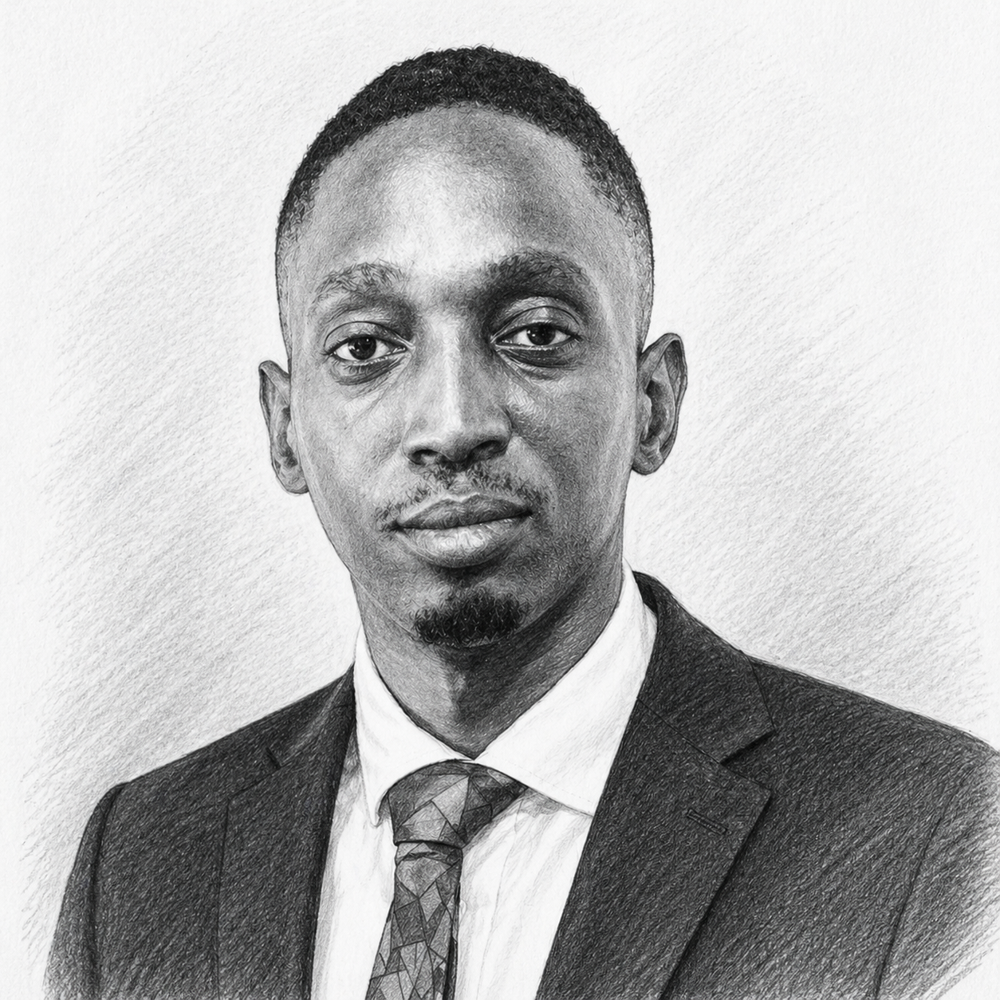

Cybersecurity Architect · AI Security Researcher · Network Security

Over a decade building and securing infrastructure across public sector, education, and enterprise environments. My work spans network security, cloud architecture, incident response, and AI security research.
Currently a Cybersecurity Engineer at West Yorkshire Combined Authority, I work alongside a Managed SOC to deliver the organisation's Cyber Security Strategy, managing vulnerability programmes and responding to incidents across critical public infrastructure. I've deployed firewalls and security controls at scale, led engineering teams, and advised organisations on ISO 27001 and NIST-aligned risk frameworks.
My research sits at the intersection of AI and cybersecurity. I've published peer-reviewed work in ACM proceedings and spoken at international conferences, including a keynote session at apidays London on securing APIs in Zero Trust environments.
Led original research developing the first LLM-based multi-agent framework for autonomous cloud security policy enforcement. Designed a cloud-adapted TRiSM framework addressing AI safety and explainability. Created Byzantine consensus algorithms achieving 97% consensus accuracy with sub-200ms latency across 2,500 cloud resources.
dl.acm.org → View PublicationSystematic analysis of 87 Zero Trust implementations across financial services, healthcare, government, and technology sectors (2020–2025), demonstrating a 73% reduction in breach severity. Conducted under academic mentorship from Dr Amna Qureshi, University of Bradford.
DOI: rs-6602547/v1 → View PreprintLead author presentation at ACM's 9th International Conference on Advances in Artificial Intelligence. November 2025.
45-minute invited session at Convene, 155 Bishopsgate. Delivered practical guidance on Zero Trust principles for API-driven and AI-enabled systems to senior technology leaders across Europe. 23 September 2024.
Expert analysis on national television. Business Incorporated programme. 100M+ potential viewer reach.
Watch Recording →Expert commentary on This Morning programme covering cybersecurity regulatory developments. 100M+ potential viewer reach.
Watch Recording →Contributes to governance and strategic direction for cybersecurity professionals across Yorkshire and Northeast England. Responsibilities span Digital Infrastructure Governance, Young Professionals Program, and Member Engagement. Endorsed by Chapter President Marianne Coop.
Industry mentor at Leeds University Business School and Leeds Trinity University. 60 hours dedicated, reaching 1,306 participants. Officially recognised for dedication to engaging groups from diverse backgrounds. Focus: cybersecurity career pathways.